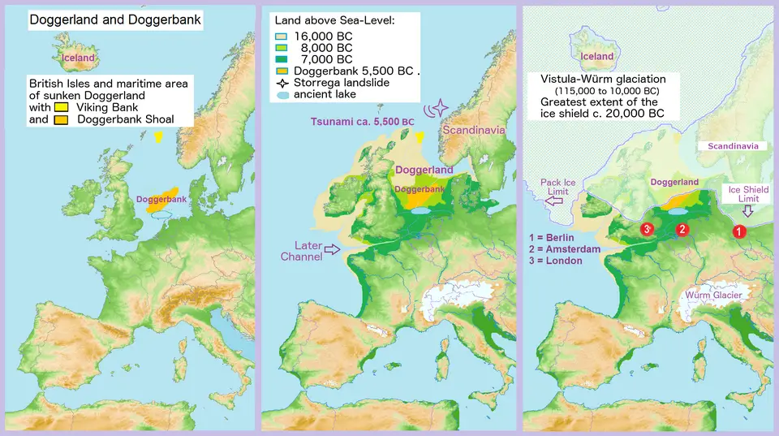
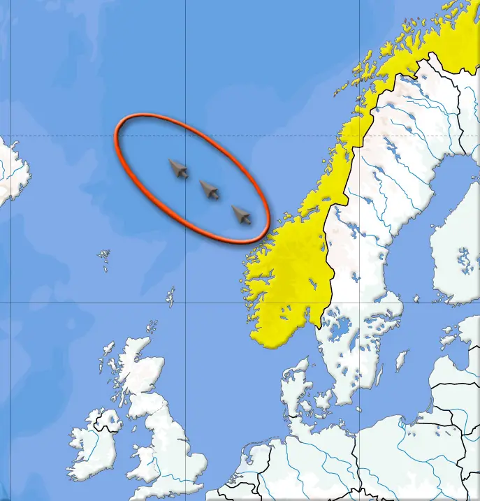
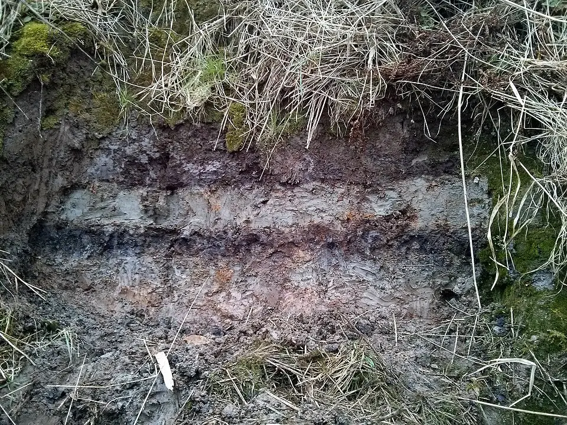
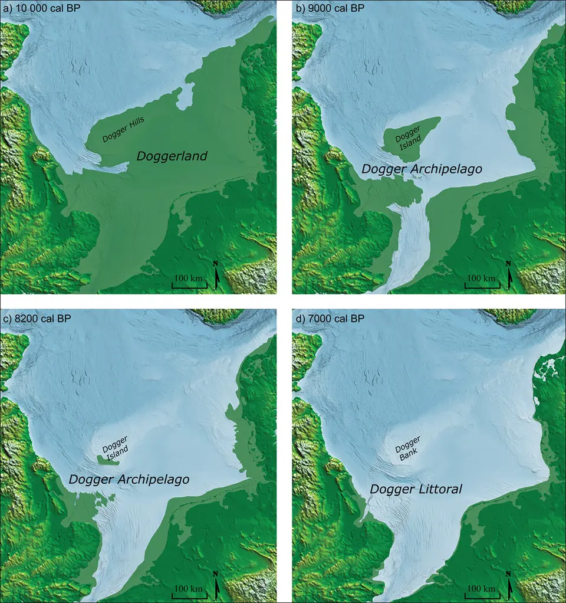

Sóng thần Storegga và vùng đất bị biển nuốt giữa Anh và châu Âu
Khoảng năm 6200 TCN, một mảng thềm lục địa ngoài khơi Na Uy sụp xuống biển và gây sóng thần khắp Bắc Đại Tây Dương. Cùng lúc ấy, vùng đất nối Anh với châu Âu đang chìm dần.

Ở vịnh Montrose trên bờ đông Scotland, du khách có thể nhìn thấy một lớp cát biển dày khoảng 0,6 m. Lớp cát ấy được sóng đưa vào bờ vào khoảng năm 6225 đến 6170 TCN, theo kết quả đo carbon phóng xạ từ xác thực vật lẫn trong đó. Nguồn gốc của nó nằm cách hàng trăm km, dưới đáy biển Na Uy. Cùng thời điểm ấy, ở phía nam, một vùng đất có người ở đang dần biến mất dưới biển.
Vùng đất giữa nước Anh và lục địa
Vào thời băng hà cực đại, mực nước biển thấp hơn bây giờ khoảng 120 m. Khi băng rút, giữa bờ đông nước Anh và vùng nay là Hà Lan, Đức, Đan Mạch lộ ra một vùng đất thấp rộng lớn. Giới khảo cổ gọi nó là Doggerland, theo tên bãi cạn Dogger, mà bãi cạn này lại mang tên loại thuyền đánh cá doggers của Hà Lan thế kỷ 17. Cái tên Doggerland do nhà khảo cổ Bryony Coles đặt vào thập niên 1990.
Khoảng năm 10.000 TCN, bờ bắc Doggerland có phá, đầm muối, bãi bùn, bãi cát, và bên trong là sông, đầm lầy, hồ. Nhiều nhà nghiên cứu cho rằng đây có thể từng là vùng săn bắt, bẫy chim và đánh cá trù phú nhất châu Âu thời đồ đá giữa. Rồi băng tan, nước dâng. Từ khoảng 10.000 đến 7.000 năm trước, Doggerland bị nhấn chìm dần, vỡ thành những hòn đảo thấp. Khoảng năm 6500 TCN, nước Anh đã tách khỏi lục địa. Riêng vùng cao Dogger còn là một hòn đảo cho đến ít nhất năm 5000 TCN.
Cú trượt dưới đáy biển


Storegga, tiếng Na Uy nghĩa là "Mép Lớn", là rìa thềm lục địa Na Uy, cách bờ biển Møre khoảng 100 km về phía tây bắc. Ở đó đã xảy ra ba vụ sạt lở ngầm, nằm trong số những vụ lớn nhất từng biết. Vụ cuối cùng làm sụp khoảng 290 km chiều dài thềm lục địa, với tổng cộng khoảng 3.500 km³ trầm tích.
Nguyên nhân có hai giả thuyết chính. Giả thuyết thứ nhất cho rằng một trận động đất làm khí methane bị giữ trong băng cháy dưới đáy biển giải phóng đột ngột; một mét khối băng cháy có thể nở ra thành 164 mét khối khí. Giả thuyết thứ hai cho rằng sông băng tan đã đổ hàng nghìn tỷ tấn trầm tích ra mép thềm qua nhiều thời kỳ, và một trận động đất đủ làm cả khối ấy trượt xuống vực biển sâu.
Sóng đi xa đến đâu?


Ở Scotland, trầm tích sóng thần được tìm thấy ở vịnh Montrose và cửa sông Forth, sâu vào đất liền tới 29 km và cao hơn mức triều hiện nay khoảng 4 m. Một nghiên cứu năm 2021 cho rằng khoảng 600 km bờ biển phía bắc và phía đông Scotland đã bị ảnh hưởng. Có ước tính cho rằng sóng đánh vào bờ đông Scotland cao khoảng 21 m, và tràn qua một số đảo thuộc quần đảo Shetland. Nếu một sự kiện như vậy xảy ra hôm nay, các thành phố cảng như Aberdeen, Inverness hay Montrose sẽ bị tàn phá.
Bằng chứng nói gì về số phận Doggerland


Phần này còn tranh cãi. Một giả thuyết cho rằng sóng thần đã quét qua phần đất ven biển còn lại của Doggerland, gây thảm họa cho cư dân thời đồ đá giữa. Có ước tính rằng tới một phần tư dân số Anh thời ấy đã chết, nhưng đó là ước tính, không phải số đếm.
Các nghiên cứu khác thận trọng hơn. Một nghiên cứu năm 2014 cho rằng lúc sạt lở xảy ra, Doggerland chỉ còn là những hòn đảo thấp, dù vùng này có vẻ bị bỏ hoang vào khoảng cùng thời gian đó. Sự phân bố vỏ sò vỡ ở vùng thấp và vùng cao cho thấy một phần đất vẫn còn sau sóng thần. Có ý kiến cho rằng việc hồ băng Agassiz ở Bắc Mỹ vỡ bờ, làm nước biển dâng trong khoảng hai năm, mới là đòn quyết định. Nhìn chung, sóng thần có thể tàn khốc với những ai ở trong vùng nước tràn, nhưng không phải là nguyên nhân khiến phần cuối cùng của Doggerland chìm hẳn.
Từ đó đến nay, lưới cá còn kéo lên xương voi ma mút, sư tử và nhiều công cụ thời tiền sử.
Chi tiết bên lề: mũi lao trong cục than bùn
Năm 1931, tàu cá Colinda kéo lưới gần bãi Ower, cách bờ Norfolk khoảng 40 km, và vớt lên một cục than bùn. Bên trong có một mũi lao bằng gạc hươu có ngạnh, dài 220 mm, có niên đại trong khoảng 10.000 đến 4.000 TCN. Đó là một trong những bằng chứng đầu tiên cho thấy con người từng sống ở nơi nay là đáy Biển Bắc. Từ đó đến nay, lưới cá còn kéo lên xương voi ma mút, sư tử và nhiều công cụ thời tiền sử.
Dư âm đến hôm nay
Từ năm 2003 đến 2007, nhóm của Vince Gaffney và Ken Thomson ở Đại học Birmingham dùng dữ liệu địa chấn do công ty dầu khí Petroleum Geo-Services cung cấp để vẽ lại khoảng 23.000 km² địa hình Doggerland. Họ đặt tên cho các dòng sông và đồi cát dưới đáy biển, như sông Shotton. Từ năm 2015, dự án Europe's Lost Frontiers của Đại học Bradford khoan lấy lõi trầm tích để tìm DNA cổ. Năm 2019, nhóm này vớt được một hòn đá ghè bằng đá lửa ở độ sâu 32 m, cách thị trấn Cromer khoảng 40 km.
Bản thân Storegga cũng được nghiên cứu kỹ khi Na Uy chuẩn bị khai thác mỏ khí Ormen Lange gần đó. Kết luận được công bố năm 2004 là vụ sạt lở gắn với trầm tích băng hà, nên khó tái diễn trừ khi có một kỷ băng hà mới.
Vụ sạt lở Storegga và sóng thần của nó được địa chất học xác nhận; nó đã góp phần vào số phận Doggerland đến mức nào thì vẫn đang được tranh luận.